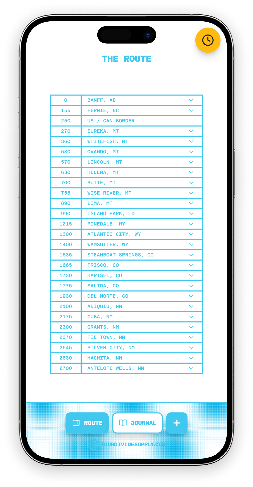
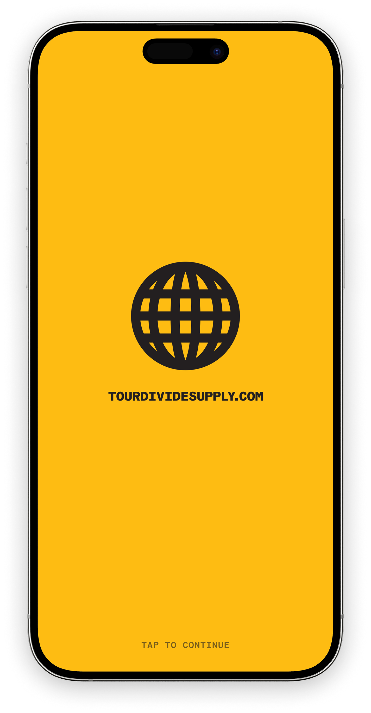

TourDivideSupply.com was created by JJJJustin, an avid bikepacker and product designer who has ridden over 5,000 miles on the Tour Divide route. This is a preview of two tools built for riders planning or remembering their time on the Divide.
The Ride Journal is a waterproof, pocket-sized notebook, the same size as a passport, a nod to a route that crosses borders. It's made to disappear into a jersey pocket or handlebar bag, ready for sketching maps, tracking daily miles, noting resupply conditions, or capturing what it felt like in the moment.
The app is a digital companion, a place to organize notes, track towns along the 2,745 mile route from Banff to Antelope Wells, and store addresses, hours, and phone numbers so resupplies stay quick and efficient, while still holding onto the parts of the ride that never show up on Strava.